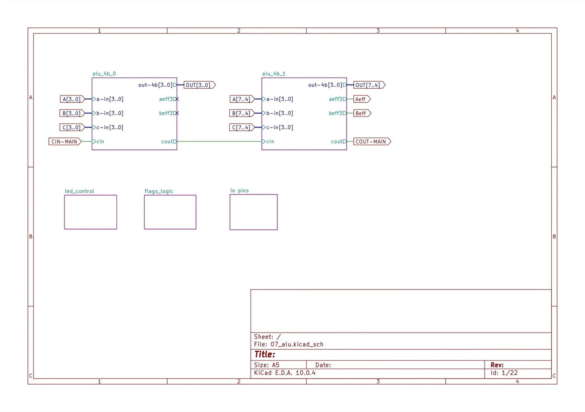

Dispatch · Copper
The ALU was the hard part. The rest is 32-bit plumbing.
While fab runs, design slices that remain in the machine: writeback mux, bus arbitration, register file, memory, PC. Not a throwaway FSM.
I am pushing to design the remaining boards. I had assumed the most complicated one was the ALU — which is done and routed. Next is everything else: register file, memory, PC/stack, data bus, shift/mul-div. The ALU was the deep combinational problem. What is left is mostly 32-bit plumbing.

Fig. — ALU, done07_alu · the hard combinational slice
That is the plan from last week: while the ALU fab runs, design slices that ship in the final machine instead of a throwaway FSM.
The first slice is the multiplexers on the data path — writeback mux, bus arbitration, the glue that ties ALU, memory, and register ports onto one 32-bit highway. A naïve 32-bit mux bank costs hundreds of millimetres. Bus drivers on each contributor. Matched decode enables, one-hot, the same idea as the display scan. Digital already has the behaviour. The board work is making the fanout physically tolerable.
Contention on a shared tri-state bus is not theoretical. At bring-up clocks the overlap window is small. One active driver per bus. Finish the mux and driver plan on 06_data_bus first — it unblocks every other board that needs to read or write the shared word.
From the build
The work behind the words.
{kind=link}

The ALU schematic behind the physical board.

Assembly of the discrete ALU, one package at a time.